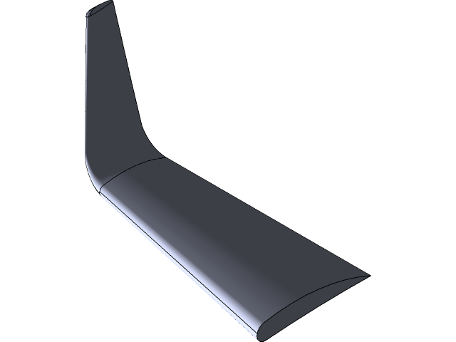
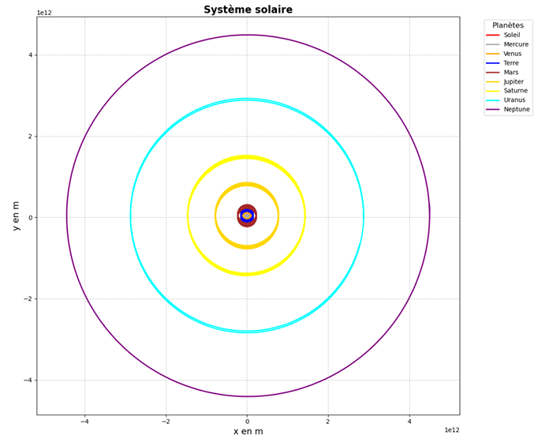
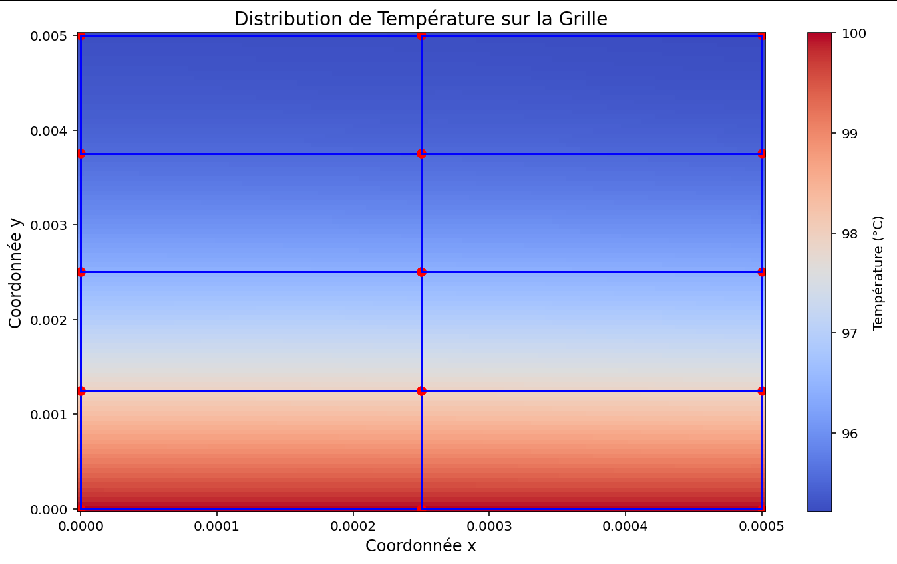

Ingénieur calcul et conception mécanique
Disponible à partir de mi-octobre 2026
Email : baptiste.ridolfi@gmail.com
Téléphone : +33 7 82 92 70 10
Localisation : Lyon, France
Mobilité : France entière
LinkedIn : baptiste-ridolfi
Bonjour ! Je suis Baptiste Ridolfi, ingénieur en Génie Mécanique diplômé de l'École Polytechnique Universitaire de Lyon 1.
Mon parcours s'est construit autour d'une double compétence en calcul de structures et en mécanique des fluides numérique. À l'Université de Tohoku, au Japon, j'ai mené une étude du flux thermique sur un véhicule de rentrée atmosphérique en collaboration avec l'agence spatiale japonaise, de la génération de maillage à la validation en soufflerie hypersonique, travail qui a donné lieu à une publication scientifique. Chez Clauger, j'ai ensuite créé de zéro la fonction calcul mécanique du bureau d'études : outils de dimensionnement sous norme, notes de calcul éléments finis justificatives et manuels internes, sur l'ensemble du catalogue machines.
Ce qui m'intéresse, c'est la chaîne complète : partir d'une géométrie CAO, la modéliser, la justifier, et rendre le résultat exploitable par ceux qui conçoivent. Je travaille aussi bien sous SolidWorks et Ansys que sous OpenFOAM et en calcul parallèle.
Je recherche aujourd'hui un poste d'ingénieur calcul, mêlant simulation et conception, disponible à partir de mi-octobre 2026.
N'hésitez pas à parcourir mes projets ci-dessous et à me contacter pour échanger sur vos besoins.
Internalisation de la compétence de dimensionnement mécanique, en tant que premier et seul ingénieur mécanique de l'entreprise.
Mission transverse sur l'ensemble du catalogue machines : structuration d'un dossier mécanique interne, développement d'outils de dimensionnement sous norme et production de notes de calcul justificatives, dont une validée par un bureau d'études externe.
Compétences développées :
Simulation d’écoulements hypersoniques sur véhicule de rentrée spatiale et validation expérimentale.
J'ai co-écrit l'article scientifique "Large Eddy Simulations on Heat Flux Characteristics of Apollo-shaped Capsule" (Inokuma et al.).
Compétences développées :
Outils Utilisés : SolidWorks, Ansys Workbench
Description du projet : Ce projet vise à modéliser puis simuler l'efficacité des winglets sur les performances aérodynamiques d'un avion.

Outils Utilisés : C++, Python
Description du projet : Ce projet vise à développer une simulation interactive des interactions gravitationnelles entre plusieurs corps célestes.
L'objectif est d'utiliser la programmation orientée-objet en C++ pour les calculs de physique lourde (position, vitesse, forces) et de visualiser avec une animation, l'orbite des corps.

Outils Utilisés : Python, Méthodes des éléments finis
Description du projet : Développement et validation d'une simulation numérique par Éléments Finis (MEF) pour modéliser la distribution de température dans une ailette, comparant les modèles 1D (linéaires/quadratiques) et 2D (triangulaires/quadrangulaires).

Diplôme d'ingénieur en génie Mécanique
Options : simulation numérique haute performance, écoulements complexes et polyphasiques, turbomachines
Cycle préparatoire PeiP
Mention Bien. Spécialités : Mathématiques, Physique-Chimie, Numérique et sciences informatiques
Vous souhaitez en savoir plus sur mon parcours et mes compétences ? Téléchargez mon CV complet au format PDF pour obtenir tous les détails.
📄 Télécharger mon CVIntéressé par mon profil ? N'hésitez pas à me contacter !
Disponible pour un poste d'ingénieur calcul à partir de mi-octobre 2026.